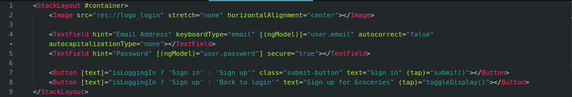
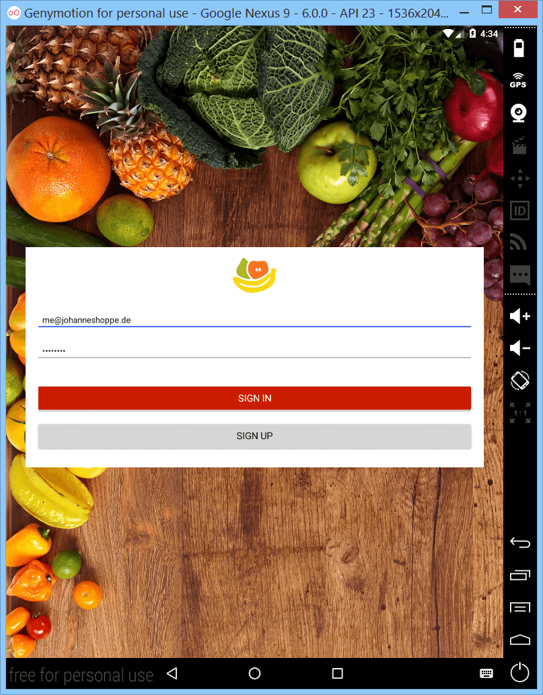

Nativescript
Build amazing iOS and Android apps
with technology you already know
Co je Nativescript?
- Umožňuje vyvíjet nativní aplikace prostřednictvím webových technologií
- Vývoj mobilních aplikací je rychlý a intuitivní
- Výsledná aplikace se přibližuje opravdové aplikaci, není to Webview aplikace
Mnoho způsobů, jak vyvíjet aplikace
- XML markup + Typescript (JS)
- HTML angular šablony + Typescript (JS)
- Vue.js + Typescript (JS)
Začínáme s Nativescriptem
- Požadavky
- Instalace Nativescriptu
- Nativescript ekosystém
- Základy vývoje na Android platformě
- Nastavení vývojového prostředí
- Praktická ukázka na webovém IDE
Požadavky k instalaci
- Node.js 6.X +
- Java Development Toolkit 8
- Android SDK 22+
- Android SDK Tools
- Nastavené systémové proměnné ANDROID_HOME + JAVA_HOME
-
Volitelné
- Android Studio
- Google repozitář
Instalace Nativescriptu
- Instalace probíhá přes Node Package Manager
-
npm install -g nativescript
- Po instalaci ověříme instalaci
-
tns doctor
No issues were detected.
-
tns update
Update successfull
Android SDK Tools
Soubor nástrojů spravující vývojové nástroje pro Android
SDK Manager
- Spravuje závislosti a nástroje potřebné pro vývoj Android
AVD Manager
Zakládá a spravuje virtuální obrazy Android OS
Obrazů může být více a simulují různá zařízení
Emulator
Spouští virtuální obrazy AVD
Je nejpohodlnějším způsobem vývoje mobilních app na PC
Start projektu
Založíme nový projekt
tns create my-app-name --template tns-template-hello-world-ng
Nebo jednodušeji :)
tns create my-app-name --ng
Spuštění projektu
emulator -memory 768 @jmeno-obrazu-ke-spusteni
tns run dev
Adresářová struktura aplikace
Copak se nachází ve složce app
- App_Resources
- drawable-hdpi
- drawable-mdpi
- ...
- drawable-xxxhdpi
- ...
K čemu slouží složka pages
- Do pages ukládáme komponenty, které naše aplikace bude využívat
- Patří sem css styly (*-common.css i list.android(ios).css
- Komponenty ovládají typescript soubory
- NS aplikace se chová jako SPA, jednotlivé pages propojuje router ng-2
Templates markup
Nativescript s Angular 2 používá vlastní markup značky. Nejvíce připomíná formát XML
- Button
- Label
- TextField
- SearchBar
- Switch
- ...
Layout system
Nativescript nemá DOM. Místo toho má vlastní layoutovací systém.
- UI elementy je možné skládat do několika možných layoutů.
- FlexboxLayout
- AbsoluteLayout
- DockLayout
- GridLayout
- StackLayout
- WrapLayout
Ukázka jednoduchého layoutu

Ukázka jednoduchého layoutu

Nativescript pluginy
Pokud narazíte na cokoliv, co Nativescript v základu neumí, tak věřte, že už na to nejspíše někdo napsal plugin.
tns plugin add nativescript-social-share
Po přebuildování projektu je nutné ještě doplnit závislost pluginu
var socialShare = require("nativescript-social-share");
Více info na nativescript marketplace
Nativescript playground
play.nativescript.org
Po propojení přes QR kód se zpřístupní web IDE s live reloadem ve smartphonu.
Pojďme se na něj podívat :)